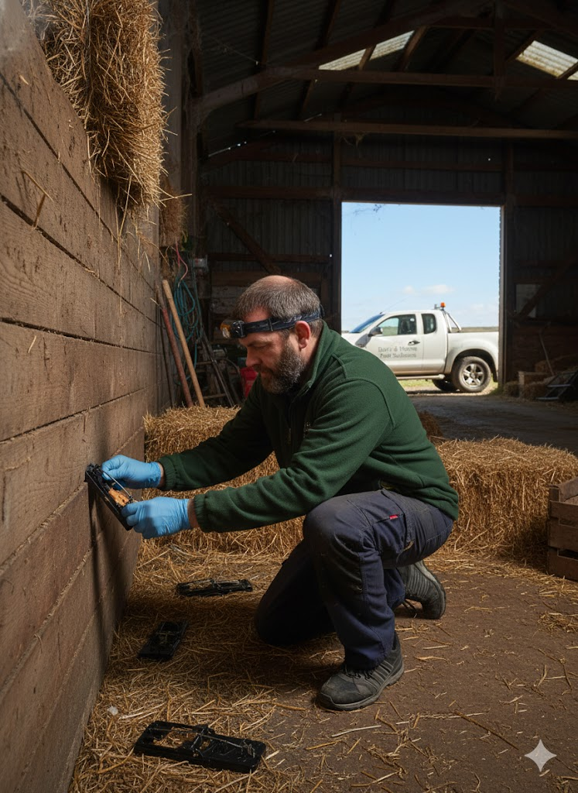
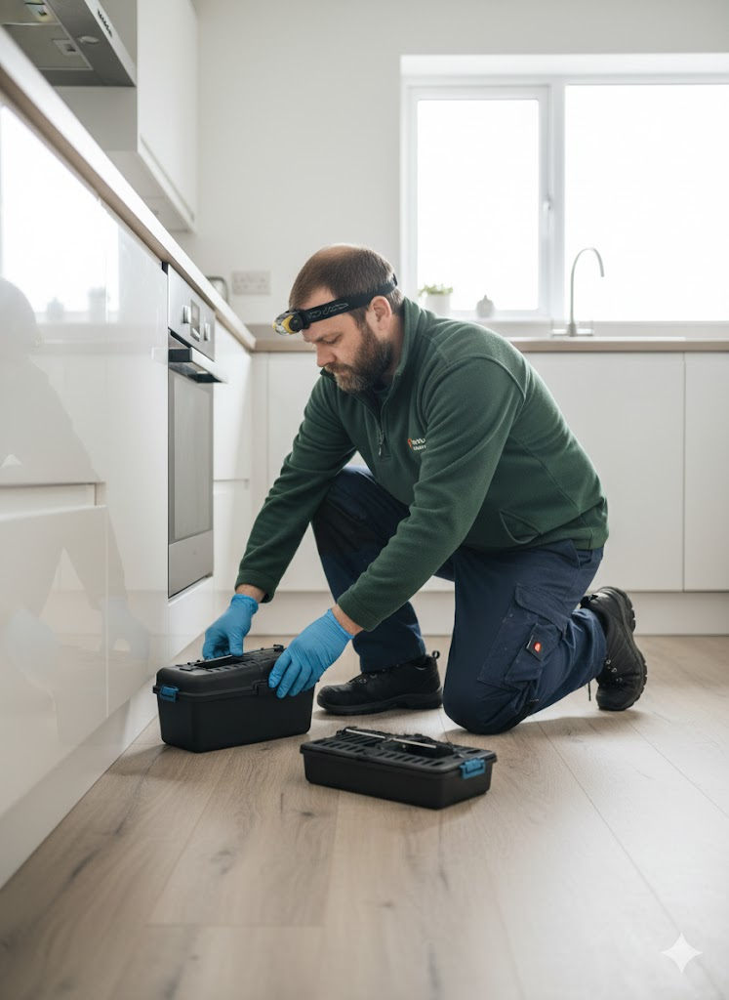

Silage-Safe • Livestock-Safe • Family-Safe Rat Trapping
Merthyr Tydfil • Rhymney • Ebbw Vale
Traditional Fenn & break-back traps only — zero poison risk to your cattle, sheep or kids.
Call 07375 303124 – Free Farm SurveyIf you've got rats in your Merthyr barn, Rhymney silage clamp, Ebbw Vale feed store or Troedyrhiw loft, you need a proper valleys rat catcher — not someone dropping poison that contaminates feed or kills pets.
We are a family-run Welsh rodent specialist covering Heads of the Valleys daily, clearing rats from farms, homes and businesses with 100% poison-free Fenn traps — safe for dairy ops, equine yards and families.
Why Merthyr Farmers & Homeowners Choose Us
- No anticoagulant poisons – zero silage/livestock risk
- Traditional Fenn traps – the most effective method
- Daily checks until clear (included in fixed price)
- Same-day response for emergencies
- Proofing advice to stop re-infestation
- DBS-checked, insured & valleys-local
Our Rat Control Services – Tailored for Valleys

Farms & Silage Stores
Poison-free clearance for barns/feed – safe for cattle/sheep in Tredegar & Ebbw Vale.

Houses & Lofts
Discreet, fast removal in Aberfan/Penydarren homes – no sprays, family-safe.

Commercial Units
Audit-ready for pubs/factories in Merthyr – unmarked vans, zero disruption.
Full Coverage – Heads of the Valleys
Frequently Asked Questions
No – only traditional traps. 100% safe for silage & livestock.
Same-day emergencies – we're valleys-based.
Yes – audit-compliant, discreet, no downtime.